Details
What information helps Port respond with a useful answer instead of a generic reply.
Ports / 01
Ports opens as a clear maritime decision hub: what Port offers, who it helps, why it matters, and which route to take first.
The first screen combines positioning, proof, primary action, and fast internal navigation, so people can act immediately or compare the rest of the ports route with context.
Shipping route hero
Select the closest route and Port keeps the next step, proof, and follow-up expectation aligned with cargo reliability and reach.
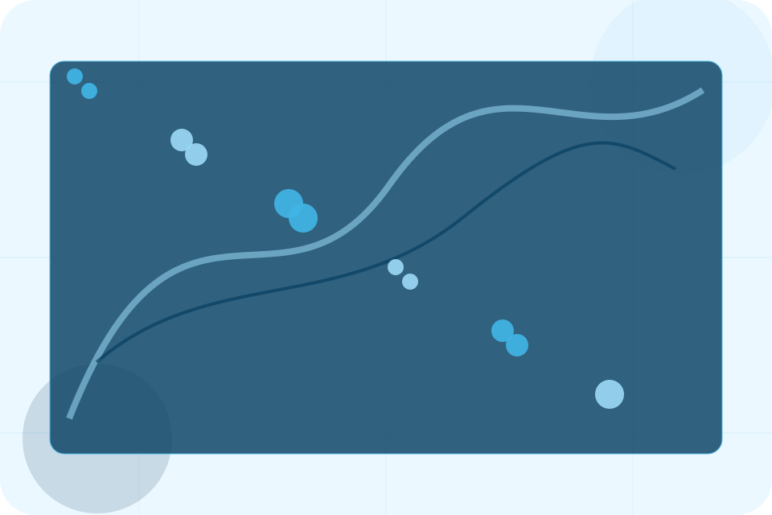
Ports / 02
Locations makes the contact path concrete: what to send, how the response works, and what Port needs before visitors request shipping.
The section reduces contact friction by naming the channel, expected detail, privacy path, and response expectation instead of dropping visitors into a generic form.
Explore Ports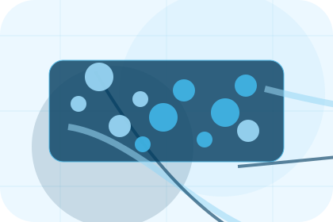
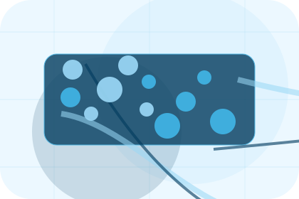
What information helps Port respond with a useful answer instead of a generic reply.
Ports / 03
Facilities adds dark context to the ports route, using the blue ocean logistics portal structure to support cargo reliability and reach before visitors choose a next step.
Port uses cargo service cards and focused copy to make the decision easier to scan, aligning the section with cargo reliability and reach rather than filling space.
Explore PortsFacilities gives the page a specific angle instead of repeating the navigation label.
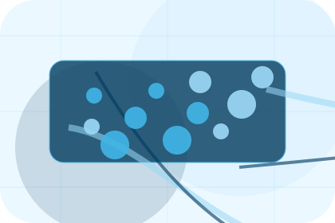
The cargo service cards show what to compare, what to avoid, and what matters most for maritime, shipping & marine services visitors.
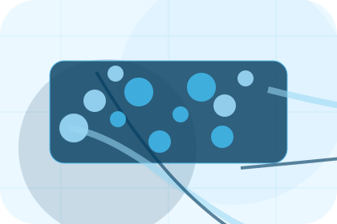
The final cue points to a useful internal route so the section keeps the journey moving.
Ports / 04
Partners gives the proof layer for ports: standards, evidence, and reassurance that make the next decision feel grounded.
Instead of relying on vague claims, Port presents visible standards, process cues, and proof artifacts that help maritime visitors judge fit.
Explore PortsVisible proof that helps visitors believe the claims behind partners.
The quality, safety, or operating expectation this section makes explicit.
What becomes clearer before someone decides whether to request shipping.
Ports / 05
Schedules adds dark context to the ports route, using the blue ocean logistics portal structure to support cargo reliability and reach before visitors choose a next step.
Port uses cargo service cards and focused copy to make the decision easier to scan, aligning the section with cargo reliability and reach rather than filling space.
Explore PortsSchedules gives the page a specific angle instead of repeating the navigation label.
The cargo service cards show what to compare, what to avoid, and what matters most for maritime, shipping & marine services visitors.
The final cue points to a useful internal route so the section keeps the journey moving.
Ports / 06
Routes adds dark context to the ports route, using the blue ocean logistics portal structure to support cargo reliability and reach before visitors choose a next step.
Port uses cargo service cards and focused copy to make the decision easier to scan, aligning the section with cargo reliability and reach rather than filling space.
Explore PortsRoutes gives the page a specific angle instead of repeating the navigation label.
The cargo service cards show what to compare, what to avoid, and what matters most for maritime, shipping & marine services visitors.
The final cue points to a useful internal route so the section keeps the journey moving.
Ports / 07
Documents gives researching visitors a practical route into guides, checklists, and comparison material without leaving the site structure.
Each resource behaves like a useful internal link, giving cold and warm visitors a way to learn, compare, and return to the action path.
Explore Ports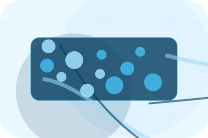
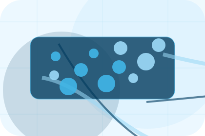
A useful entry point for visitors who need more context before they request shipping.
Ports / 08
Notes adds dark context to the ports route, using the blue ocean logistics portal structure to support cargo reliability and reach before visitors choose a next step.
Port uses cargo service cards and focused copy to make the decision easier to scan, aligning the section with cargo reliability and reach rather than filling space.
Explore PortsNotes gives the page a specific angle instead of repeating the navigation label.
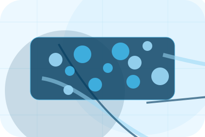
The cargo service cards show what to compare, what to avoid, and what matters most for maritime, shipping & marine services visitors.
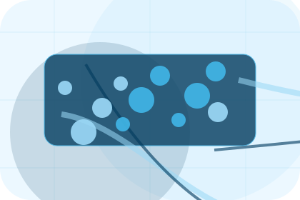
The final cue points to a useful internal route so the section keeps the journey moving.
Ports / 09
Maps adds dark context to the ports route, using the blue ocean logistics portal structure to support cargo reliability and reach before visitors choose a next step.
Port uses cargo service cards and focused copy to make the decision easier to scan, aligning the section with cargo reliability and reach rather than filling space.
Explore PortsMaps gives the page a specific angle instead of repeating the navigation label.
The cargo service cards show what to compare, what to avoid, and what matters most for maritime, shipping & marine services visitors.
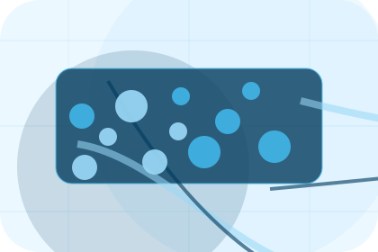
The final cue points to a useful internal route so the section keeps the journey moving.
Ports / 10
Port closes the ports route with a clear action, a quick reminder of the value, and a low-friction way to request shipping.
Visitors who are ready can use the primary action. Visitors who are still comparing can scan the section links, proof, and support routes before they request shipping.
Request ShippingThe final block keeps the choice simple: act now, compare one more proof route, or send enough detail for a focused response.
Request Shippingcargo reliability and reach
A shipping site with ocean-blue service panels, cargo quote logic, port schedules, and tracking proof. Ports ends with a direct path to request shipping, plus enough context for visitors who still need to compare.
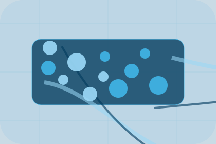
Request ShippingInformation is provided for planning and should be reviewed for the final client, location, and operating rules.